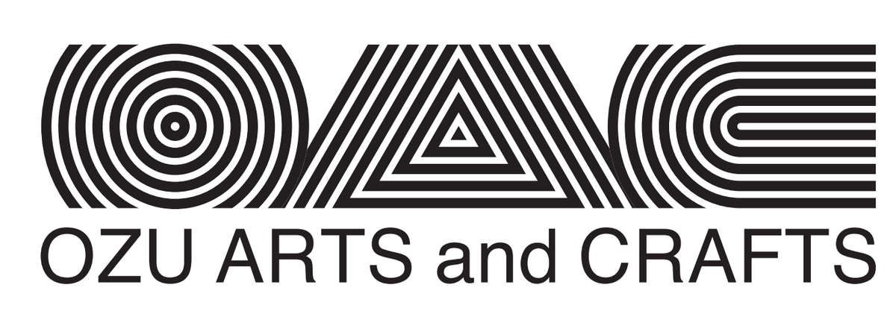

2026.10.10 sat – 10.25 sun
「おおず－場をめぐる、知覚の変容」
大洲の歴史的建築と自然景観を舞台に、国内外のアーティストが「場」と「知覚」をテーマに作品を展開。城下町に息づく「時間の層」、訪れる人々の感覚が交差する芸術祭。大洲城、臥龍山荘、盤泉荘、旧平田邸を巡りながら、日常の知覚が変容していく体験をお届けします。
SELECTED VENUE
加藤嘉明が築いた城郭。戦国時代の歴史を今も伝える建築空間。
アーティスト：康力升
光がどのように空間を満たし、既知の建築を新たに見えさせるのか。
SELECTED VENUE
庭園と建築の美が融合した明治の大庄屋邸宅。
アーティスト：團上祐志
静けさの中に、作品や存在の気配が立ち現れる瞬間。
SELECTED VENUE
100年の歴史を持つ伝統的な季節湯治場。
アーティスト：張博傑
人や文化、過去と現在が交わる場で、新しい意味が生まれる。
ガラスインスタレーション《入林》— ステンドグラス表現と大洲地域の素材（枯れ枝・環境音）を活用。
盤泉荘100周年記念連携イベント：10月17日（土）～18日（日）
アクセスを見る →SELECTED VENUE
大洲の商業文化を象徴する町家。現在はアーティストの制作拠点。
アーティスト：ネシム・コーエン
アーティストの制作プロセスそのものに触れ、作品がどのように生まれるのかを体験する。
《庭へとつながる茶会》— 菌類と植物の関係、茶道精神の現代的解釈による参加型の体験。
アクセスを見る →DESTINATION BASE
ヒトシマ / HITOSHIMA 平田邸 ART SPACE
DESTINATION BASE
ヒトシマ / HITOSHIMA 平田邸 ART SPACE
その他の交通・宿泊情報
松山空港より車・バスでアクセス（所要時間・詳細は準備中）
岡山・広島方面より乗換（詳細は準備中）
高速道路・一般道での経路案内（詳細は準備中）
NIPPONIA HOTEL 大洲、大洲まちの駅あさもやほか市内宿泊・休憩施設（特別ツアー連携先）